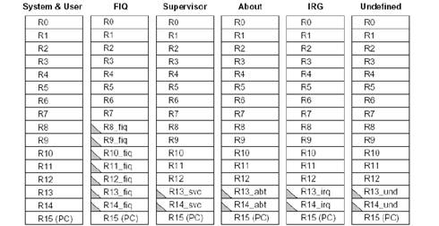

YakOS实时操作系统的实现
Table of Contents
1 最简操作系统
古人学问无遗力，少壮工夫老始成。
纸上得来终觉浅，绝知此事要躬行。
记得大学上学时学习C语言是从一个HelloWorld程序开始，其实不管是学习C语言还是学习其他，
都遵循由简单到复杂的原则。今天我们开始实现一个操作系统也一样，首先我们的目标是实现一个最简操作系统，
那何谓最简操作系统，我认为最简操作系统就是一个单进程的无限循环。
不要小瞧这个无限循环，在51单片机盛行的那个年代，N多的系统就是由一个无限循环实现的，
随着时代的发展，单一的无限循环再不能满足需求，操作系统也就随着人们的需求变的越来越复杂，
操作系统的定义也就越来越清晰，操作系统担负起了整个系统的资源调度、管理的职责。
YakOS最终的目标不是实现一个简单的无限循环，但目前YakOS的迈出的第一步就是实现一个无限循环，
更准确的说是在ARM系统上实现一个最简的操作系统。为什么要在选择ARM，理由很简单，
ARM是使用最广的MCU，ARM就是主流，当然咱也不是随风逐流的人，你懂得！
在实现最我们的最简操作系统之前，让我们来先了解一下ARM微处理器。
ARM系列处理器包括ARM7，ARM9，ARM11，A8/9 等，我们重点介绍ARM9，
ARM9支持32位的ARM指令集及16位的Thumb指令集，在了解指令集之前，
我们先了解一下ARM的寄存器。
ARM处理器模式:
- 用户模式(User): ARM处理器正常的程序执行状态。
- 快速中断模式(FIQ): 用于高速数据传输或通道处理
- 外部中断模式(IRQ): 用于通用的中断处理
- 管理模式(Supervisor): 操作系统使用的保护模式
- 数据访问终止模式(Abort): 当数据或指令预取终止时进入该模式,可用于虚拟存储及存储保护
- 系统模式(System): 运行具有特权的操作系统任务
- 未定义指令中止模式(Undifined): 当未定义的指令执行时进入该模式,可用于支持硬件协处理器的软件仿真
ARM寄存器：
ARM共有37个32位寄存器，R0~R7为未分组寄存器，在所有模式下，未分组寄存器都指向同一个物理寄存器，
R8~R14为分组寄存器，对于分组寄存器，它们每一次所访问的物理寄存器都与当前处理器的运行模式有关，具体如下图所示：

中断向量表的实现：
.section ".text.boot"
ENTRY(_start)
ldr pc, _reset
ldr pc, _undefined
ldr pc, _syscall
ldr pc, _prefetch_abort
ldr pc, _data_abort
ldr pc, _reserved
ldr pc, _irq
ldr pc, _fiq
_reset:
.word reset
_undefined:
.word undefined
_syscall:
.word syscall
_prefetch_abort:
.word prefetch_abort
_data_abort:
.word data_abort
_reserved:
.word reserved
_irq:
.word arm_irq
_fiq:
.word fiq
CPU复位后会执行向量表中第一行代码，把_reset地址处的内容加载到pc指针中，即执行reset函数。 reset的实现如下：
ENTRY(reset)
/* disable i/d cache and mmu */
mrc p15, 0, r0, c1, c0, 0
bic r0, r0, #(1<<15 | 1<<13 | 1<<12)
bic r0, r0, #(1<<2 | 1<<0)
/* enable alignment faults */
orr r0, r0, #(1<<1)
mcr p15, 0, r0, c1, c0, 0
stack_setup:
/* for irq mode */
mrs r0, cpsr
bic r0, r0, #0x1f
orr r1, r0, #0x12
msr cpsr_c, r1
ldr r13, =irq_save_spot
/* for svc mode */
orr r1, r0, #0x13
msr cpsr_c, r1
ldr sp, =stack_top
clear_bss:
/* clear out the bss */
ldr r0, =__bss_start
ldr r1, =_end
mov r2, #0
__bss_loop:
cmp r0, r1
strlt r2, [r0], #4
blt __bss_loop
/* start c program */
bl kmain
在reset函数中做以下几件事后跳入c代码kmain:
- 关闭I/D cache及MMU
- 设置堆栈，为执行C代码作准备
- 清除bss段
- 最后就跳入kmain执行C代码